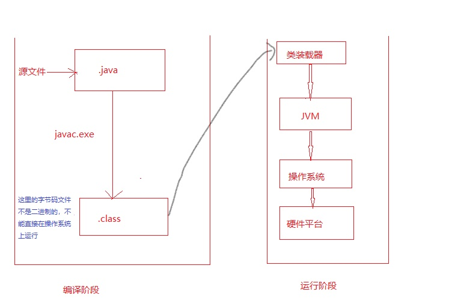

java笔记——java加载与执行原文出处:本文由博客园博主wwww2提供。
原文连接:https://www.cnblogs.com/wwww2/p/11737619.html

java的加载与执行过程：
编译阶段：
- 首先，我们先创建一个java源文件xxx.java
2. 经过javac.exe编译（如果源文件没有语法错误），生成一个或多个.class文件,注意的是此时的字节码文件不是二进制的，无法在操作系统上执行。
运行阶段：
- 当我们在命令窗口输入 java 类名 命令时，java.exe命令会启动JVM,JVM会启动类装载器ClassLoader.
- ClassLoader（即类装载器）会去硬盘上查找字节码文件，然后将查找到的.class字节码文件装载到JVM中。
- JVM再将.class字节码文件解释成二进制10001000这样的数据
- 然后操作系统会执行二进制和底层操作系统进行交互。
这样java的加载与执行就完成了。